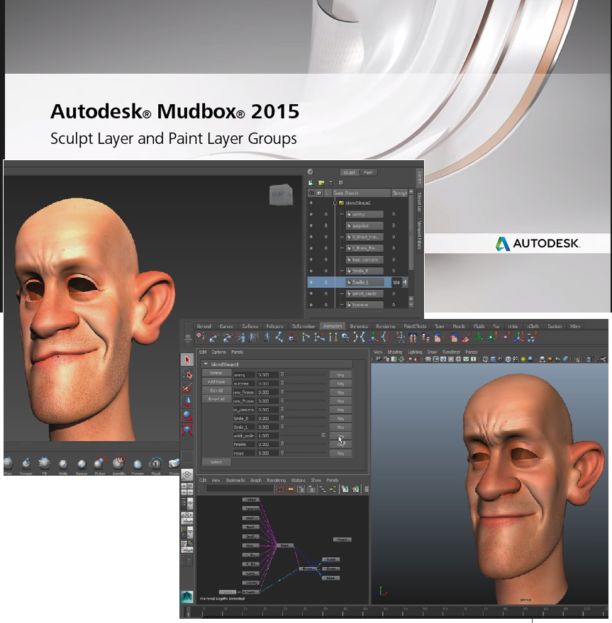
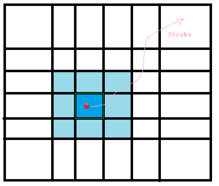
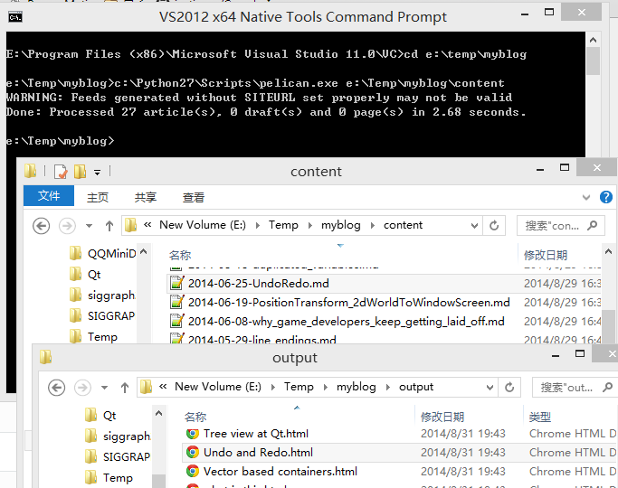
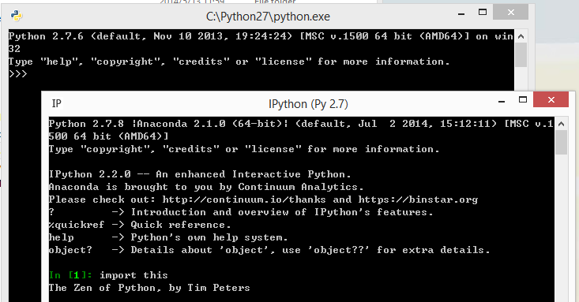
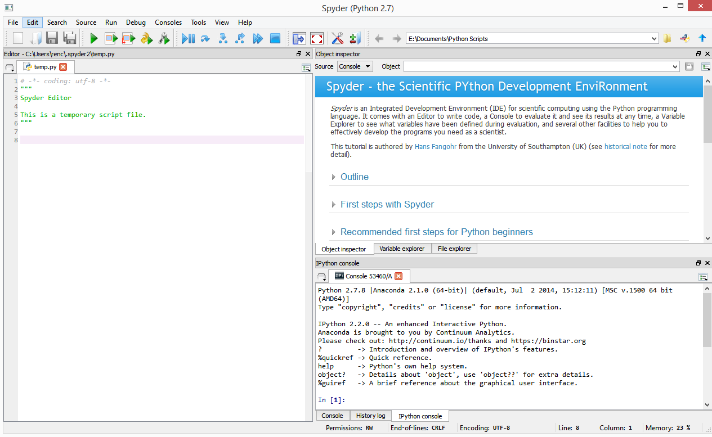

Algo - Tower of Hanoi
在书[Anany Levitin, 算法设计与分析基础]的第二章又看到汉诺塔的问题:
有三个柱子A B C; A柱上有好几个盘子, 小的放在大的上面;
现在问怎么把A柱上的盘子移到C柱上, B是做辅助的, 条件是大的盘子不能压到小的盘子上. 所以结果C柱上的盘子也是小的放在大的上面。
A,B,C; 三个柱子
假如A上有1个盘子，直接放到C上就解答完了。
假如A上有2个盘子ab，a盘小的 在 b盘大的上面. 先把a放到B上, b放到C上, 然后把a从B移到C上. 结果就是C柱上有ab。[pattern 1]
注意这种case中先把a放到C上, 那b放到B上, 然后a从C移到到B柱上, 那B柱上就有ab两个盘子了. 这结果很像上面的, 但是B柱跟C柱次序反了. 可见在移动盘子的时候, 柱子的次序, 是很重要的.
假如A上有3个盘子, 去尝试多画几次, 还是能解出来, 但是发现好像没有什么规律啊.
假如A上有4个盘子, 那可能就要尝试好多次才能碰巧一次解答出来. 还没有看出来规律.
要换一种角度来看啊, 上面我们已经解答了A柱上有2个盘子的case了. 那重新看A柱上有3个盘子的case.
A柱上的2个盘子 ...
more ...Bit field
一般在C++代码里面遇到的基本类型bool, char, short, int, etc, 都是说占多少个字节, 也就是最少也是一个字节. 那有时候会不会1个字节就多余了, 或者说1个字节不单只可以表示true/false, 还可以表示更多的信息呢? 毕竟1个字节=8bits=2^8=256个状态.
Part 1
Bit field 貌似就是想充分利用内存. 下面是我看了参考(Reference那一节列了一些)之后做的实验:
#include <cstdio>
// 交通繁忙时间
enum CallTariff { tOffPeak, tMediumRate, tPeakTime } ;
// 账单
struct Bill
{
unsigned int iNameId; // 客户名
CallTariff eTariff;
};
struct BillVIP
{
unsigned int iNameId; // 客户名
bool isVIP ...Volume Data Visualization
上周五Sq.B突然说起L.F到一个创业公司做Director of Engineer了,
http://www.datifex.com
为L.F高兴的同时, 这家公司很是吸引. 它的team介绍中很多都很牛的背景呢.
big data visualize ...
这年头连zf都在说大数据, 我不熟悉, 但好像他们的出发点都是怎么从大数据中获利, 例如怎么分析得到情报, 而visualization貌似可以帮到他们啊, 这就是需求? 有意思.
To read list:
http://cyrille.rossant.net/ 他写了两本书和很cool的project:
book Learning IPython for Interactive Computing and Data Visualization; 已下载pdf.
book IPython Interactive Computing and Visualization Cookbook;
vispy.org ...
阅读笔记 GLSL Cookbook - Chapter 1
[OpenGL 4.0 Shading Language Cookbook] - Chapter 1
Profiles: Core vs. Compatibility
OpenGL 3.0版本引入了deprecation model模型. 被标记为deprecated的函数或者功能, 意味着在将来的版本中会被removed去掉. 例如immdediate mode rendering使用的glBegin/glEnd在3.0版本中标记为deprecated而在3.1版本中被去掉.
为了backwoods compatibility后兼容, OpenGL 3.2版本引入了compatibility profiles的概念.
Core profile: 目标是某一个特定的版本, older features removed.
Compatibility profile: 为了后兼容, older features 还在的.
有些地方有full vs. forward compatible context这些概念, 听上去有点令人confusing. 跟上面的core/compatibility概念是有些不一样的 ...
more ...Mudbox - Sculpt Layer Group
下面的截图来自autodesk/mudbox features中视频:

Group的引入可能会有这两个用处:
+ 管理、组织organize layers, 如脸部的和身体上的可以分两个group来组织layers;
+ one group <> one blendshape in maya; 当然blendshape复杂很多, 只是最简单支持.
看到参与的功能暴露出来面对用户了, 感觉好像创造的生命一样, 希望它能健康(别crash 别hang), 能有用:-)
more ...Book - Everyday Probability and Statistics


那本[Naked Statistics]是流行书, 所以年初的时候买来看, 主要是讲日常生活中, 例如媒体, 那些统计学方面的概念可能会被误解or有意无意的用来误导大众.
也正是在看这书时候发现后几章的概念不懂, 想找本简单的书来学习一下, 于是就有了第二本[人人都来掷骰子], 跟前一本的区别是: 前几章讲了一些概率的基础, 后几章讲统计学的概念。每一章介绍一个概念, 不长, 可以一下看完. 而且一般的步骤是例子|概念|怎么算, 没有复杂的公式没有公式证明推导等. 15章后开始的样品空间, 还不是很清晰.
不过能在上几周断断续续地看完这本书还是满足:-) 特别是还在追这部美剧:
Person of Interest / 疑犯追凶;
这有一个问题就是我们还有多少隐私呢? 倒不是说zf监控了我们的信息, 而是我们在日常的网上购物/网上言论/网上账单等都把我们清清楚楚的记录了, 甚至比我们自己还记得清楚, 慢慢地可能比我们自己还了解我们自己了. so who care the privacy? 说真的, 我都不知道哪些属于隐私范围, 而另外即使知道了别人的隐私, 是否又等于侵犯了别人的隐私呢?
Algo - Check if a binary tree is mirror or symmetric
问题: 给出一个binary tree二叉树, 判断这个数是否关于根节点对称.
尝试在纸上画画形状, 例如:

这就引入一个问题, 问题中的对称是指结构上的对称就足够了, 还是还要加上node里面的值相等呢?
case 1: structure symmetric;
case 2: structure symmetric + value equal;
因为case 2是在case 1的基础上层进的, 所以并不矛盾, 先考虑case 1好了. 于是对着上面的图来写代码,
bool isSymmetricBinaryTree(Node *root)
{
// node without children
if (root->left == nullptr && root->right == nullptr)
return true;
//
if (root->left && root->right == nullptr)
return false ...Algo - Detecting a Loop in a Singly Linked List
This is not the first time i see this algo problem, and i want to describe the details of how to solve it this time in case need to revisit it later.
首先想象一下一个list带loop/circle的形状.

最左边的最general, 但是一个node只有一个next指针, 只能指向一个后续node, 所以只有最后的情况才可能. 或者是这个list没有loop, 或者是这个list本身就是一个loop/closed circle.
假如一个node的定义是:
struct Node {
struct Node *next;
};
要形成一个loop, 某一个node的next指向已经visit过的node ...
more ...Difference between Parameter and Variabe and Argument
翻译过来的话, variable 是变量, parameter and argument 是参数的意思, 怎么区别使用呢?
int add(int a, int b) // (int a, int b)叫argument list, a/b是parameter.
{
int c = a + b; // c is variable.
return c;
}
int x = 1; // x对应自己的scope下的variables.
z = add(x, 2); // x/y作为函数参数时候就是arguments.
引用一下网上的解释:
more ...A parameter is a variable in a method ...
Mode Switch in Class Hierarchy

想象我们正在搞一个砌砖的程序, 是的, 码农只是其中一种称呼, 时不时也被称为搬砖的.
一开始, 我们只有不断在已有的基础上添加砖头的功能。
后来, 我们需要有移动某些砖块的功能。例如在最外表面的砖块都可以被移动。
再后来，我们需要敲掉某砖块的功能。
它们分别对应于add, move, delete这三种modes.
其中一种设计方法是
class Build
{
enum BuildMode {
Add,
Move,
Delete
};
BuildMode m_currentMode;
};
这方法是把所有mode的实现都放在同一个地方, 每次更新都要改这个地方Build的源代码实现. 但是假如在添加move, delete这新mode的时候, 我们不想or不能改已有的只有add mode的Build源码呢?
这是另一种设计方案
class Build
{
// care about the add mode only.
};
class BuildMove : public Build
{
bool onMouseEvent()
{
check if we will go ...Char Array vs Char Pointer
刚才在阅读以下内容时候复习了一下这两个概念. Quick case: Char Pointer vs Char Array in C++, by Bartlomiej Filipek
// Test case of char array vs char pointer.
//
#include <iostream>
int main()
{
char strA[] = "char array!";
char *strP = "char array?";
std::cout << "sizeof(strA): " << sizeof(strA) << ", of: " << strA << ", addr: " << &strA << std::endl;
std::cout << "sizeof(strA): " << sizeof ...Pointer is copied when passed as function parameter
起源
看到这段代码(肯定是简化更改版啦)
void XList::merge(Item *item)
{
... // do the merge sth;
item->unref();
}
void XList::merge(Item &item)
{
... // do the merge sth;
}
上面的unref()是用于reference count的, reference计数减一的意思. 为什么有这东东呢, 为什么下面用引入作为参数的就不需要呢? 我怀疑是指针在作为函数参数的传递过程中被复制了, 也就是指向实际的物体的指针又多了一个, 所以merge之后就unref减少一个. 以下的test case尝试证明指针是否被复制了:
// try to check if a pointer will be copied during passing-by-pointer.
//
#include <iostream>
void func1(int ...Fail to surround the mouse with the vertices
一个鼠标点press/click在模型上, 然后drag/move, 在这个drag的路程中, 鼠标压到的faces/edges都是连续的, 而顶点vertices竟然不是, why ?

一个stroke的过程: mouse click/press -> drag/move -> release.
图中红色点假如为click的起点, 然后沿着粉色的路径来drag鼠标....
从face面的角度来看, 深蓝色的面为起点, 然后鼠标一旦离开这个深蓝色的面之后, 肯定会进入这个深蓝色面四周的8个浅蓝色面之一(假如把面的边界也看作面一部分). 于是在stroke的路线中, 鼠标所pick到的面是一个连着一个的, 连续.
从edge边的角度来看, 鼠标从起点移动时候, 虽然鼠标在面内部而不是压在边上面, 但是面的几个边总有一个是距离当前鼠标位置近一点的, 我们选择这个边; 当鼠标移动要离开这个深蓝色的face的时候, 肯定会触碰到这个face是边(假如把角点corner也看作是edge是一部分). 于是在stroke的路线中, 鼠标所pick到的边是一个连着一个的, 也连续.
而从顶点vertices/cornersd的角度来看呢? 如图中的stroke路线就不会压到顶点, 不会触碰到顶点, 也就是顶点, 不像之前的面和边 能保证鼠标移动的时候肯定会pick到连续的face/edge, 很可能在stroke的过程中都没有接触到几个呢, 更何况是连续?
怎么解决, 假如我们要求stroke的路线中出现一串连续的顶点?
因为上面说到面是完备的 ...
Build myblog using pelican
都不知道这是第几次又想建一个自己blog来host那些笔记了, 相比于之前的blogger, wordpress, 这次用pelican and python来搞...
环境:
- python 2.7, withn pip, easy_install
- pelican

注意上面的起始目录是E:\Temp\myblog> 我试过别的起始目录是E:\Temp\myblog\context> 就发生错误了. 进入output目录, 打开index.html就可以看到blog了。这里我没有用到make html命令哦.
遇到的problems:
- 设置图片目录的路径.
我的图片都是文档.md目录下的data目录, 例如folderA/xxx.md, folderA/data/yyy.PNG. 在pelican这里, 我想保持这样的结构, folderA 相当于 context目录, 目的是blog的内容(文档和图片)已经可以放到某个folderA里面, 然后要用pelican来build这个blog的时候, 直接把folderA目录里面的所有东西copy到context目录下就ok了.
但是pelican默认是把图片放到blogFolder/image目录 ...
build simple ui using pySide
记录一下做UI prototype时候遇到的新概念
life is short, use python.
早有耳闻, 一试果然不凡.
安装Qt 4.8.X, 安装pySide (how? 具体看其主页), 然后新建file.py, 敲几行pySide代码, 然后command line里面python file.py立刻就出ui效果了. 省却了ide / c++代码 / 链接设置 / 反复修改反复编译的麻烦.
事情的缘由是, 最近要参与用python快速做一个ui的prototype, 本来主程序M里面就有Qt+pySide, 所以连安装都不需要, 直接改py文件就得到ui结果, 真快. 于是就缺学几下python了.
example 1. To define the style sheet 样式 of a button.

QPushButton {
border: 2px ...Python Basis 基础笔记
新接触python programming, 记录一些基础.
Batteries Included. 立马就可以使用的. Installizaton
download 2.7 from python website and install at C:\Python27;
download Anaconda 2.1.0 install at E:\Anaconda;

看来两者并不冲突.
这是从Anaconda里面起来的Spyder IDE:

Variables and Data
A variable is a name that points to some specific data type. 不允许声明一个变量而没有=赋值.
contents = 6;
print ...
Name on a book
记录一次参与翻译一本外文书的过程, 过程有点累, 结果有点甜.
you know, it is funny that people do not care your name, until you are in trouble. -- 美剧<疑犯追凶>第一集里面的话, 类似而已哦.
去参与翻译一本书, 可以出现在书店书架上的, 还提到你的名字, 是不是很cool?
昨天看到email, 被告知我有份参与的书终于上架了, "在各大网店都有售。但是样书会比较慢" 里面上google一下，果然在amazon.cn等都找到了:
交互式程序设计（第2版）
~ Joshua Noble (作者), 毛顺兵 (译者), 张婷婷 (译者)
出版社: 机械工业出版社; (2014年8月15日)
语种： 简体中文
是的 ...
more ...conflict by duplicated variables
用多于一个变量来表示一个状态, 变量之间很容易不一致呢.
conflict
假如我们要描述以下这个状态:
在一次mouse click的picking中, 我们给出了pick的范围, 一个rectangle, 然后要标记是否只要pick一个物体object就够了, 还是pick所有在rectangel下面的物体.
当假如我们只要pick到一个物体就够了, 那可能在for里面, 一旦找到某一个物体有效, 我们就可以返回, 退出pick过程了. 也就是我们只要pick到第一个有效物体就ok了, 而不考虑这个pick到的物体是否距离mouse click的点最近.
那么, 要记录这个状态, 我们看下面的实现:
class XViewContext
{
public:
PickingResult pick(...);
void setPickSingle(bool b) { m_bPickSingle = b; };
bool pickSingle() const { return m_bPickSingle; };
private:
bool m_bPickSingle;
};
PickingResult XViewContext::pick(...)
{
...
if ( pickSingle() ) ...;
else ...;
}
在这实现中, 是否要pick单一个物体的状态作为data member inside ...
more ...Undo and Redo
Undo and Redo 已经遇到很多次了, 记录一下想法.
So we beat on, boats against the current, borne back ceaselessly into the past. -- The Great Gatsby
所以我们不停地往前划，逆流而上，回到无穷无尽的过去。《了不起的盖茨比》
一个程序假如连undo/redo都没有, 那基本上不是给人用的, 可能只能算是demo.
Undo/Redo
用windows/paint画图工具做例子就很直观啦.
case 1. 假如操作次序是: 画一笔A, 再画一笔B; undo 一次就是剩下A; undo 第二次就是空; redo 一次就是增加A; redo第二次就是恢复到A B; 这个case的特点是undo到底了，再redo到底. 没有undo的时候又夹着redo ...
more ...Position Transfromation from 2d world to window screen
工作中遇到一个问题, 坐标映射。A 2d world is rendering in a window, user can mouse click on the window, how to find the position at 2d world corresponding to this mouse positon?
Background背景
工作中遇到一个问题, 坐标映射。A 2d world is rendering in a window, user can mouse click on the window, how to ...
more ...